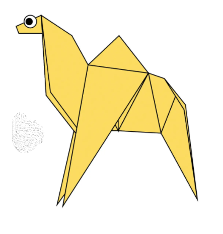
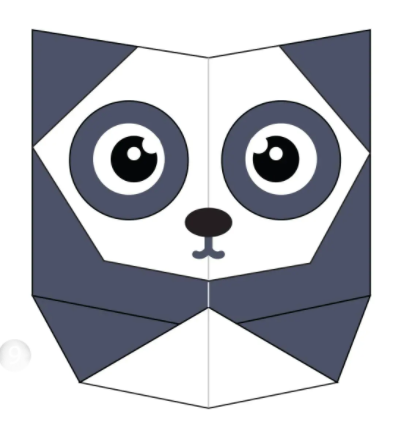

origami design
About Us
Follow Us

Intresting Facts About Camel
click on the image for details
- Camels have three sets of eyelids and two rows of eyelashes to keep sand out of their eyes.
- Camels can completely shut their nostrils during sandstorms.
- When a camel finally does find water, he can drink up to 40 gallons in one go.

Intresting Facts About Panda
click on the image for details
- Giant pandas are good at climbing trees and can also swim.
- Pandas have carnivorous teeth, but they eat bamboo and fruit.
- Prehistoric pandas lived up to 2 million years ago..

Intresting Facts About Teddy Bear
click on the image for details
- The teddy was named after President Theodore Roosevelt, after he refused to shoot a bear during a 1902 hunting trip.
- They aren’t just for children – 40% of teddy sales are for adults, and a quarter of us still has our childhood companion.
- Magellan T Bear boarded Space Shuttle Discovery in 1995 as part of a school project.